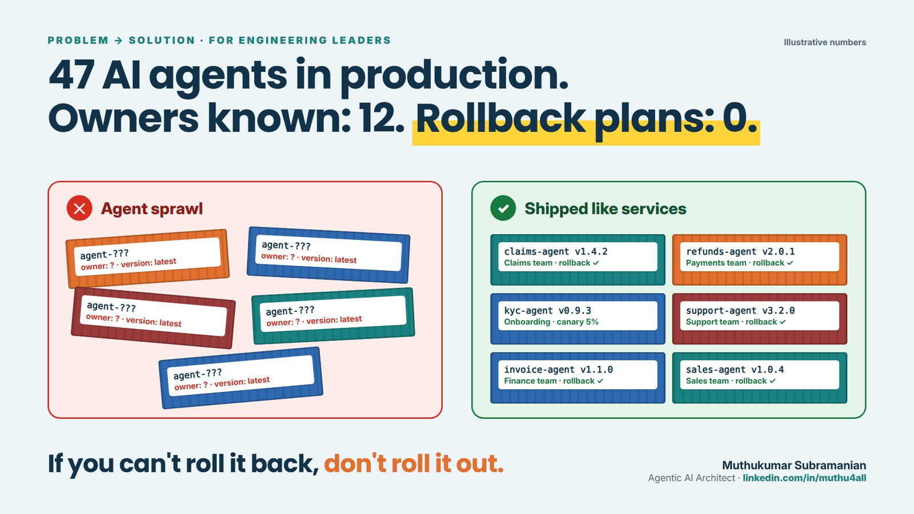

Kubernetes Taught Us to Run 1,000 Microservices. AI Agents Need the Same Discipline.
By Muthukumar Subramanian · Agentic AI Architect

Monday standup. The claims agent approved forty claims on Friday that it shouldn't have.
The first question is simple: "Which version was running on Friday?"
Silence.
Someone tweaked the prompt in the vendor console on Thursday. Someone else switched the model to a newer one "because it's cheaper". Nobody wrote it down. There's no diff, no previous version to roll back to, and nobody's quite sure who owns the agent.
(This is a composite of conversations I keep having, not one company. But if it sounds familiar, you're not alone.)
We've seen this movie before. Ten years ago it was microservices: hundreds of small services, each deployed by hand, each a mystery when it broke. Then Kubernetes and the habits around it arrived: registries, versioned deployments, rollouts, health checks, resource limits, rollbacks. Running a thousand services became boring. Boring is the goal.
Agents are at the "deployed by hand" stage right now.
The problem: agent sprawl
Every team is building agents. Support has one in a no-code tool. Finance has two in a cloud console. Sales bought one bundled into their CRM. Engineering has a dozen in code. Ask most CIOs how many agents run in their company and you'll get a guess, not a number.
Each agent is a prompt, a model, a set of tools and a set of permissions. Change any one of them and the behaviour changes. Today, most companies version none of them together.
Gartner predicted last year that more than 40% of agentic AI projects will be cancelled by the end of 2027, citing rising costs, unclear value and weak risk controls. I don't think most of those will fail because the model was bad. They'll fail because nobody could run them.
👉 [IMAGE: B-day04-2-in-article-seven-habits.png]
Caption: Seven habits Kubernetes taught us, and what each one means for agents.
The solution: run agents the way we learned to run services
Here are the seven habits I'd copy, one for one:
→ 1. A registry. Every agent is listed, with one named owner. If it isn't in the registry, it doesn't run in production.
→ 2. Versions, all pinned together. Prompt + model version + tools + permissions = one release, like v1.4.2. Never "latest".
→ 3. Rollouts. A new version goes to 5% of traffic first, then 25%, then everyone, and only if its evaluation scores hold.
→ 4. Health checks. Watch every agent: traces of each tool call, error rates, and cost per task, on a dashboard someone actually looks at.
→ 5. Limits. Token budgets, spend caps and rate limits per agent, the way containers get CPU and memory limits.
→ 6. Rollback and a kill switch. One command back to the last good version. One switch to stop it entirely.
→ 7. Identity. Each agent gets its own identity and the least permissions it needs, never a shared admin key.
If you can't roll it back, don't roll it out.
👉 [GIF: B-day04-4-in-article-canary-rollback.gif]
Caption: A new agent version goes out to 5%, fails its checks, and rolls back automatically. Nobody gets paged at 2 AM.
The platforms are moving here too
This isn't just my wish list. Microsoft made Agent 365 generally available in May as a registry and control plane for agents, with each agent getting its own Entra identity. AWS put an agent registry into preview in April as part of Bedrock AgentCore, alongside its identity and observability services. Google and others are building the same. The direction is clear: agents are becoming managed workloads, not side projects.
👉 [IMAGE: B-day04-3-in-article-agent-manifest.png]
Caption: An agent's manifest. If you can't fill in every line, it's not ready for production.
The hard parts
→ The model changes under you. If your vendor updates the model behind an alias, your "unchanged" agent just changed. Pin exact model versions where you can, and re-run evaluations when you can't.
→ Evaluations are hard. The same input can give a different output tomorrow (I wrote about this in "Let AI Talk. Let Code Count."). You need test sets per agent, and someone has to own them.
→ Shadow agents. The agents built in no-code tools outside IT won't show up in your registry until something breaks. Discovery has to come before discipline.
→ Overhead for small teams. A startup with three agents doesn't need a platform team. It needs a spreadsheet, version tags and a kill switch. Start there.
→ Tools are young and splitting across vendors. Expect your registry to be partly Microsoft, partly AWS, partly code for a while.
The opportunity
→ For engineering leaders: make "agent platform" a named team, the way "platform engineering" became one for Kubernetes.
→ For DevOps and SRE engineers: this is your next career move. Rollouts, observability and incident response for agents need exactly your skills, plus evaluation.
→ For Indian IT services firms: managed AgentOps (registry, monitoring, evaluation and rollback as a service) is a repeatable offering for every enterprise that went agent-crazy last year.
→ For founders: agent observability, evaluation and governance tools that work across Microsoft, AWS, Google and open-source stacks.
Your turn 👇
Does your company know exactly how many AI agents it runs today? Yes or no.
Tag the platform engineer who made your Kubernetes boring. You're going to need them again.